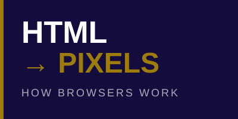

History of Browsers
From Tim Berners-Lee's WorldWideWeb to Chrome dominating the market.
History • Architecture • Key Concepts • Future Trends
In my day job as a sales manager, nearly everything my company does runs through a single application: Google Chrome. For an organization of over 3,000 employees, the web browser has become the operating system of the modern workplace.
This site explores how we got here, from simple hypertext viewers to the complex, high-performance computing environments that power the modern web.
From Tim Berners-Lee's WorldWideWeb to Chrome dominating the market.

Rendering engines, JavaScript execution, multi-process architecture, and security.
The 7 core ideas every web developer should understand about modern browsers.
Who I am, why I picked this topic, and what I learned building this site.